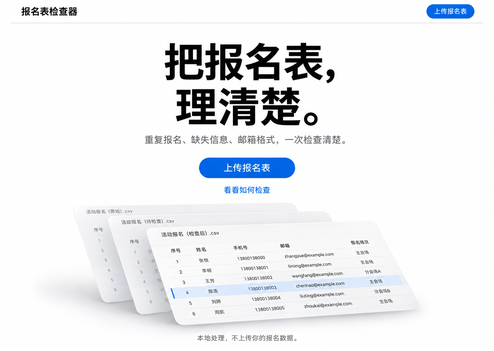
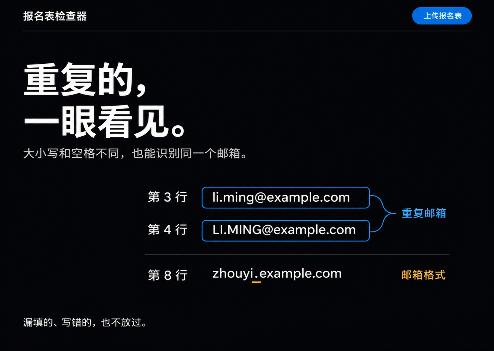
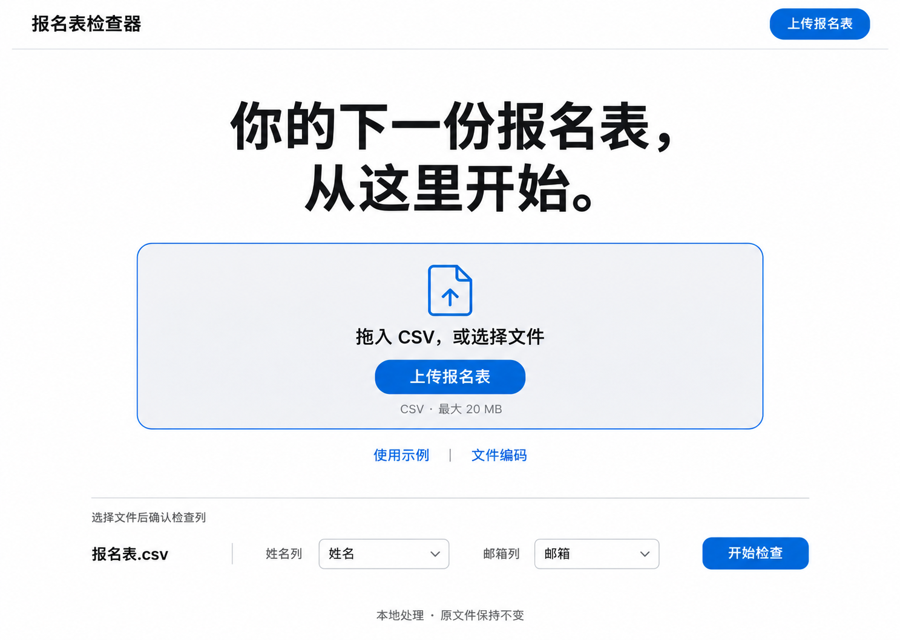
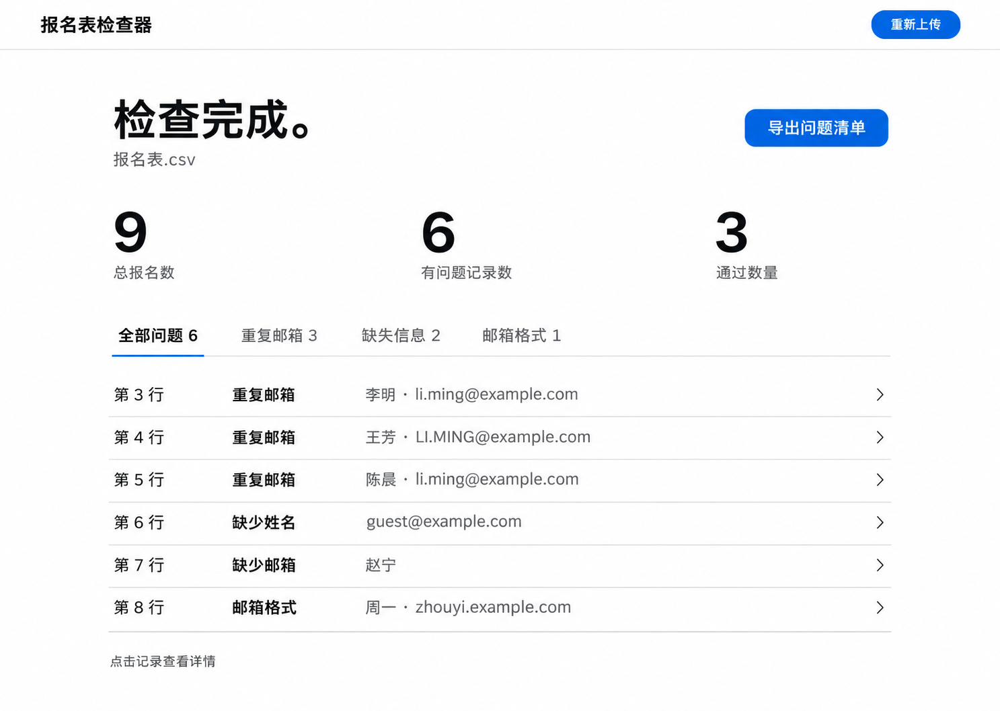
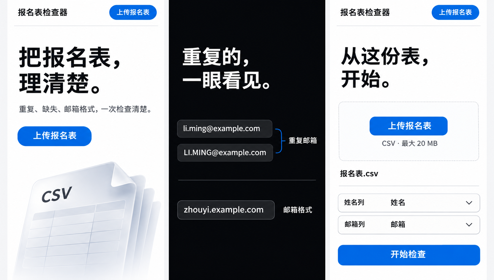
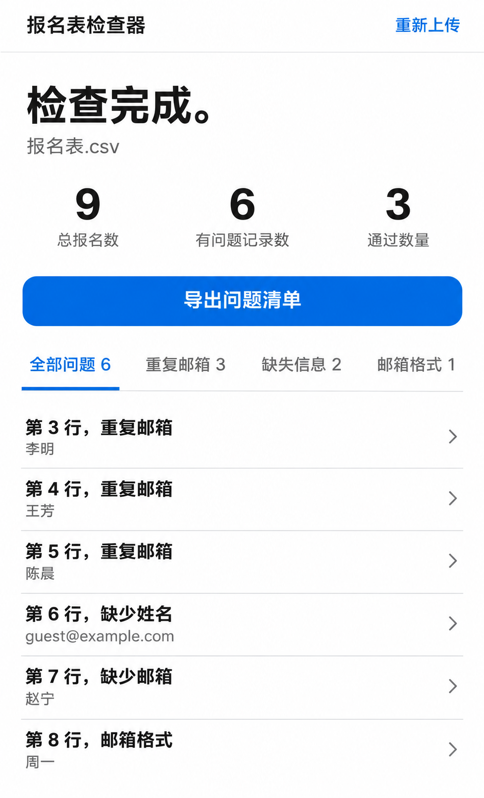

报名表检查器
第三版视觉设计提案
开阔、精确、有节奏。首页用滚动章节演示检查过程；进入结果后，界面安静下来，只留下判断与处理所需的信息。
第一阶段 · 静态概念图与动效规格 · 2026 年 11 月 3 日
本文件是设计审阅册，不是已实现的检查器。效果图中的数据均为虚构示例，按钮不能操作。现有产品文件未改动。
一、设计规划
借鉴 MacBook Pro 产品页的大字排版、留白、章节对比和随滚动展开的视觉叙事。把报名表本身作为主视觉：薄纸叠层、重复邮箱之间的连线、格式错误的细线提示。全站不使用苹果标志、产品照片或装饰性英文。
白色首屏 → 深色识别章节 → 白色上传与确认
开始检查 → 独立白色结果页
首页保留三个章节，避免介绍过长。顶部始终有“上传报名表”，首屏也有同名主按钮，点击可直接选择文件并进入确认区，不需要先滚动看完介绍。结果页不使用滚动叙事，不设置侧栏或卡片墙。
示例结果统一为 9 条报名、6 条问题记录、3 条通过。重复邮箱 3 条、缺失信息 2 条、邮箱格式 1 条，仅用于设计展示。实际统计继续使用现有检查结果；同一条记录有多个问题时，各类别可能重叠。
二、页面设计 · 桌面
01 首屏：把报名表，理清楚。

02 滚动章节：重复的，一眼看见。

03 上传与列名确认

04 独立结果页

保留现有功能：搜索、全部记录、分页和“列数不一致”筛选仍可使用。图中是精简默认状态；更多筛选放在展开工具区，出现结构问题时增加对应分类。导出范围沿用现有行为：导出全部问题，不随当前筛选缩小。
手机适配


滚动叙事与页面过渡
以下是待实现的动效设计，效果图本身不会播放动画。动效用于提示关系和状态变化，用户的滚动速度始终由用户控制。
| 场景 | 关键画面与节奏 | 时长与边界 |
|---|---|---|
| 首屏进入 | 标题先出现，说明与按钮随后；报名表叠层轻轻落定。主按钮从首帧即可操作。 | 文字淡入并上移 12px，500–650ms；错开 60–80ms，总体约 800ms，不循环。 |
| 滚动识别 | 章节进入 → 两条邮箱记录出现 → 蓝色连线绘出 → 格式错误和缺失标签出现。邮箱原文保持不变，表示识别关系。 | 桌面可用一段短固定区，额外滚动不超过一屏；图形移动 8–24px。手机按自然滚动逐项淡入，无固定长章节。 |
| 从深色回到上传 | 深色章节完整退出，白色上传章节自然进入；内容分组出现，重点转回主操作。 | 内容淡入 320–450ms，不全页闪白，不劫持滚动，不强制吸附。 |
| 文件已选择 | 上传区收成文件摘要，列名选择与开始按钮展开。错误就近显示，保留用户的选择。 | 约 220ms。空间预留，避免表单跳动或键盘焦点丢失。 |
| 检查进行中 | 按钮显示“正在检查”，轻量进度指示反馈忙碌。短任务立即完成，无人为等待。 | 能获得真实进度才显示百分比；否则使用不定进度。完成后播报结果。 |
| 首页 → 结果页 | 操作区淡出，文件名保持视觉连贯，结果标题、三个数字和列表依次稳定呈现。结果从顶部开始。 | 旧视图约 120ms、新视图约 240ms，总计约 360ms；支持共享元素时增强，否则交叉淡入。数字不滚动计数。 |
| 筛选与查看详情 | 选中下划线平滑移动，记录短暂淡入；点击条目展开说明，再点收起。 | 筛选 120–160ms，详情 180–220ms。不逐条延迟大型列表，不影响连续操作。 |
| 按钮与返回 | 悬停轻微加深，按下略微收紧，键盘焦点清晰。重新上传返回上传位置，浏览器返回行为可预期。 | 反馈 120–160ms；返回过渡 220–280ms。触屏不依赖悬停。 |
可访问性：尊重“减少动态效果”设置，关闭视差、固定演示和位移动画，直接呈现最终信息；提供键盘操作、可见焦点、明确标签、展开状态和结果播报。页面切换后焦点移到结果标题，颜色之外还有问题文字。
简短视觉规范
| 项目 | 约定 |
|---|---|
| 字体 | 使用本机系统字体：Apple 系统字体／苹方、Segoe UI／微软雅黑等；不下载字体。中文字距接近自然值，避免过度拉开或挤压。 |
| 字号层次 | 桌面首屏 80–96px、章节 56–64px、结果标题 40–44px；手机分别 44–52px、36–44px、32–36px。正文 16–18px，记录 14–16px。标题字重 600–700，正文 400。 |
| 基础颜色 | #FFFFFF 白；#F5F5F7 浅灰；#1D1D1F 正文；#0071E3 主操作。深色章节 #08090B，辅助文字 #6E6E73。 |
| 问题提示 | 蓝色识别关联、少量琥珀色强调错误位置；实际正文对比度按 WCAG AA 检查。每种问题同时配文字，避免只靠颜色。 |
| 间距与宽度 | 8px 基础节奏。桌面内容宽度 1120–1200px，两侧至少 48px；手机两侧 20–24px。首页章节留白 120–160px，手机 64–96px；结果页间距收紧至 24–40px。 |
| 控件与细节 | 主按钮高度 48px，触控目标至少 44px；按钮胶囊圆角，表单 10–12px，上传区 16–20px。分隔线 1px。阴影主要用于报名表叠层，结果列表不用浮起的卡片。 |
| 动效曲线 | 进入 cubic-bezier(.22,1,.36,1)；交互 cubic-bezier(.2,0,0,1)。主要使用 opacity 和 transform，避免大面积模糊及持续耗电的动画。 |
三、开发准备 · 待方向确认
本阶段只完成概念稿与规范。确认后在当前项目内改造视图：保留 CSV 解析、校验、邮箱规范化、导出逻辑，只调整界面结构、状态衔接与表现层。首页与结果作为两个独立视图，可通过本地 hash 导航切换，继续支持双击 HTML 离线打开。
- 按未上传、文件已选择、检查中、检查完成、无问题、筛选无结果、输入错误分别准备状态；异常提示保持清楚简短。
- 把纸张、邮箱连线和提示做成原生 HTML／CSS／本地 SVG。概念图不作为整屏图片嵌入正式产品。
- 继续保留姓名／邮箱列映射、编码选择、示例、搜索、分类、分页、导出和原行号规则。
- 优先采用原生浏览器能力；不引入联网字体、图标库、外部组件或动画服务。动效不能拖慢实际检查。
- 实施后再运行原有自动化测试，覆盖中文、空白、重复邮箱、逗号与引号，并检查导入、映射、筛选、导出、键盘和减少动态效果。
- 视觉验收尺寸：桌面 1440×900、1280×800；手机 390×844、320px 窄屏。检查大字号、长文件名、长邮箱和大批量结果。
本次验证范围：检查六张概念图、预览资源完整性以及现有产品文件未被改动。尚未实施或测试真实动画、响应式布局及页面切换；这些是下一阶段的验收项。